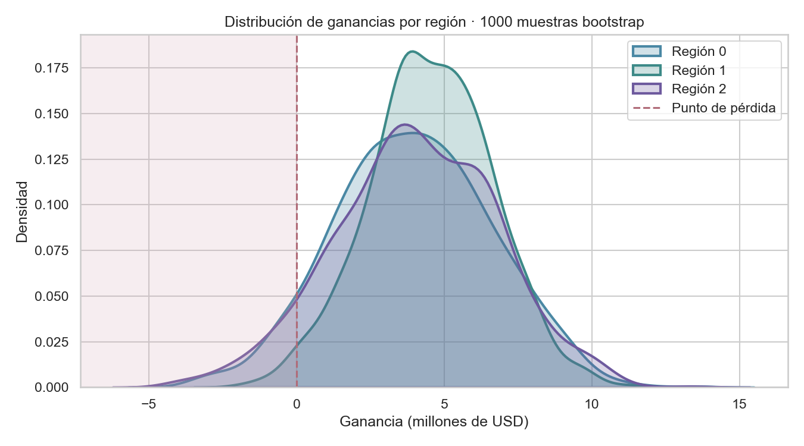
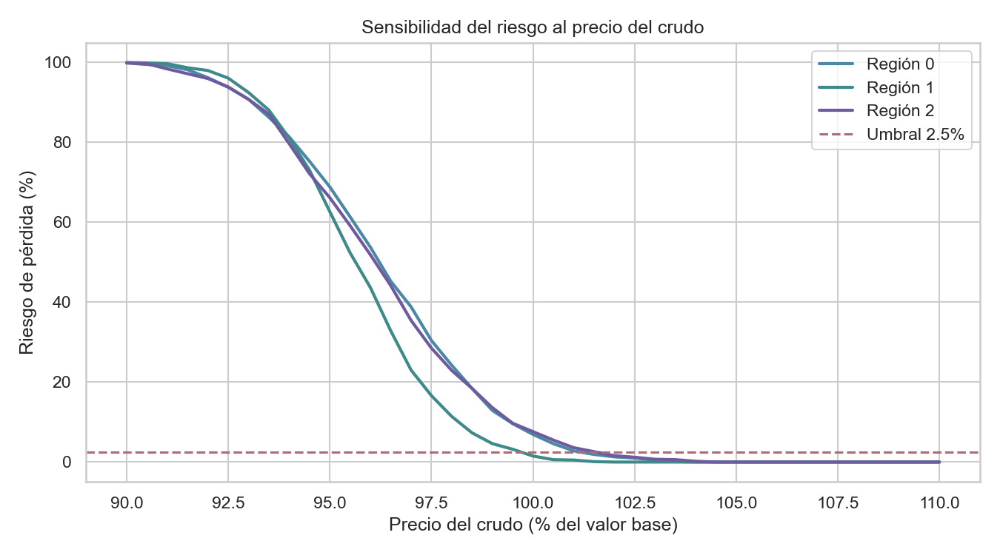

A machine learning pipeline that picks the most profitable oil region while keeping the risk of loss under 2.5%.
The only region with loss risk below 2.5% — and the highest expected profit. Its worst-case scenario still earns money.
| Region | Avg. profit | 95% CI | Loss risk |
|---|---|---|---|
| Region 0 | $3,961,650 | −$1.11M / $9.10M | 6.9% |
| Region 1 | $4,560,451 | $0.34M / $8.52M | 1.5% |
| Region 2 | $4,044,039 | −$1.63M / $9.50M | 7.6% |
OilyGiant will develop 200 new wells in a single region. From 500 explored sites per region, the 200 best are chosen. Each unit of reserves (1,000 barrels) earns $4,500, and the average well must hold at least 111.1k barrels just to break even. The catch: the average well in every region falls below that line — so profit comes entirely from picking the right wells.
On a single pass, Region 0 looked best ($33.2M). But a single estimate hides variance. Region 1's model is near-perfect (RMSE 0.89), so its well selection is reliable and its profit distribution is tight and rarely negative. Region 0 and 2, with imprecise models, swing wide and dip into loss in roughly 7% of scenarios.

In financial terms, Region 1 is the only one whose Value at Risk stays positive: the most you can reasonably lose is still a gain.
The recommendation holds at the current crude price, but the margin is thin: if the price drops more than about half a percent, even Region 1 crosses the 2.5% risk line. Region 0 and 2 would need the price to rise to qualify at all.
